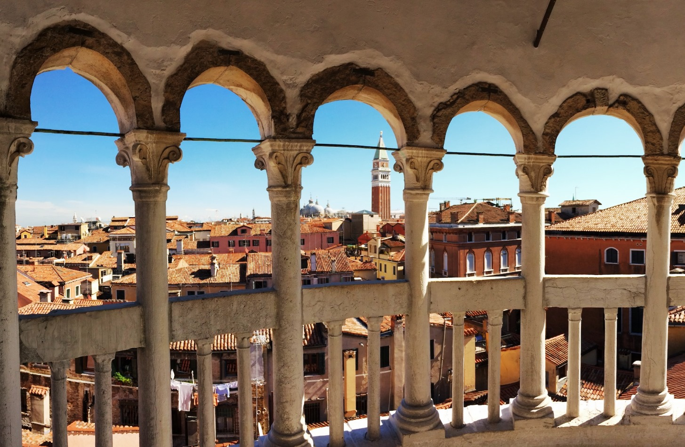
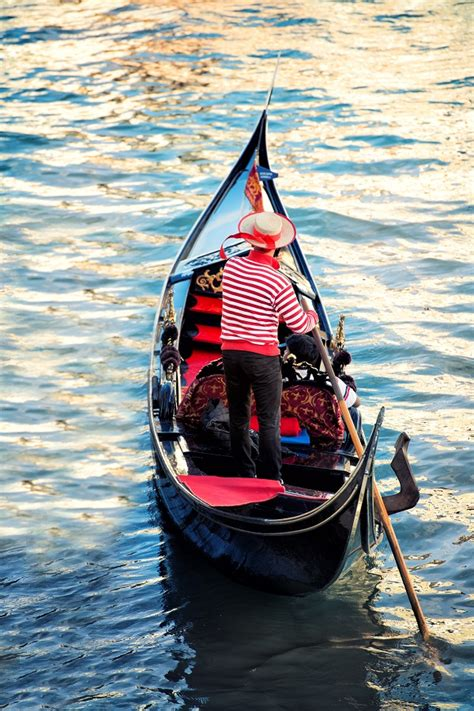

Dag 2
In het hotel heb je tijd om uit te slapen en rustig te ontbijten. Om 12 uur halen wij je op vanaf de verzamelplek van gisteren. Wij gaan dan eerst naar Scala Contarini del Bovolo. Daar blijf je tot 13:30. Hierna gaan we gondelen op de rivier: Brenta. Hierna kunt u ergens in het centrum gaan lunchen, (wij brengen u daar naartoe). Om 15:00gaan we naar het Leonardo Da Vinci Museum. Dan brengen wij u terug naar het verblijf en kunt u verder zelf van de stad genieten.
Dit is Scala Contarini del Bovolo. Hier ga je als eerst naar toe. Dit is een mooi gebouw vol architectuur. Je hebt hier een fantastisch uitzicht over de stad.

Je gaat lekker varen over de Brenta op een gondel, je komt langs mooie plekken in de stad. Neem vooral je camera mee om mooie foto's te maken!

Het Leonardo Da Vinci Museum is heel leerzaam, je leert wat hij heeft gedaan waardoor wij ons leven makkelijker kunnen laten verlopen.